A visualization grammar and a GPU-accelerated rendering engine for genomic (and other) data.
Use GenomeSpy to make custom visualizations or genome browsers. Embed in web applications or Python or JavaScript notebooks.
GenomeSpy provides building blocks for tailored, interactive genomic visualizations. Integrate them into web applications or explore your data in Python notebooks such as Jupyter and marimo, or in Observable. GPU-accelerated WebGL rendering supports smooth zooming and panning through large datasets.
A declarative grammar lets you describe your data, choose graphical marks, and combine views. GenomeSpy builds upon the concepts originally introduced in The Grammar of Graphics and later implemented in ggplot2 and Vega-Lite.
Originally developed to explore large sample collections in cancer genomics research, GenomeSpy has since been used in several publications. Try the interactive genome browser below, or browse more examples.
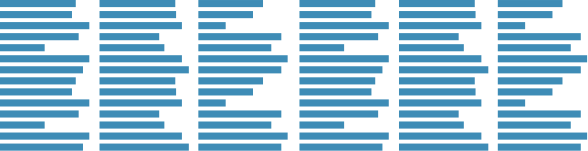
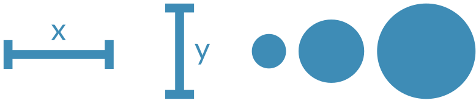
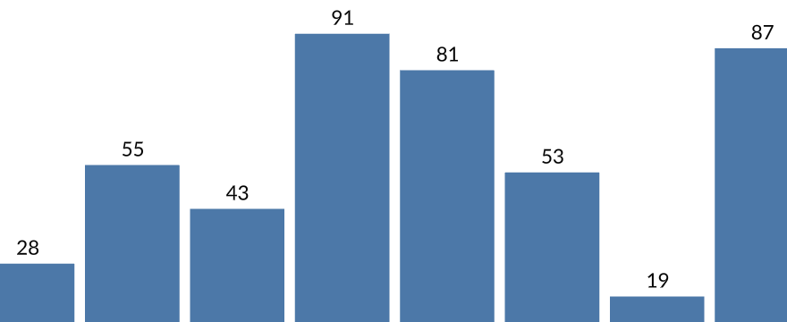
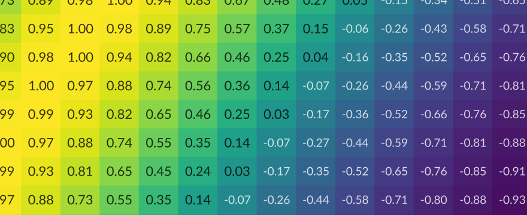
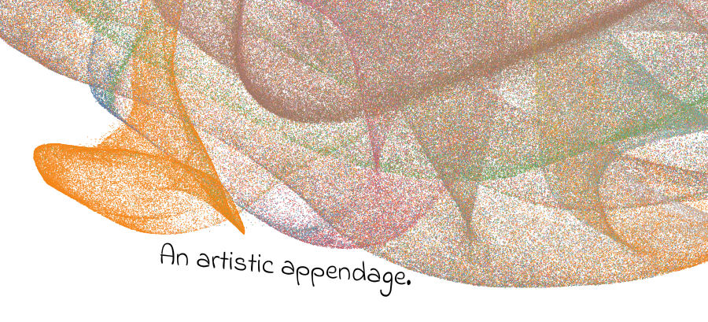
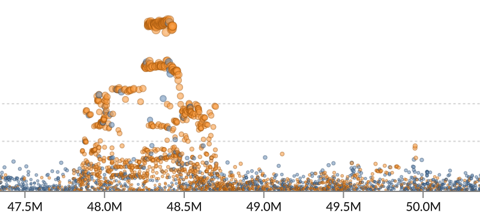
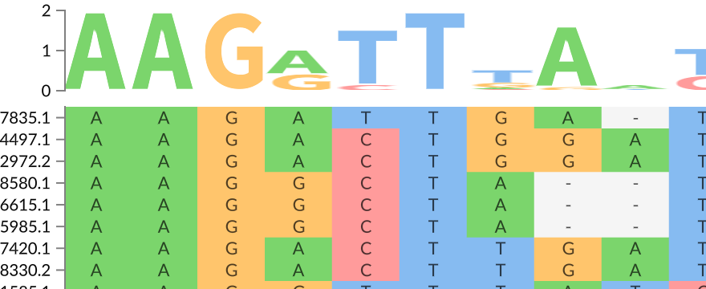
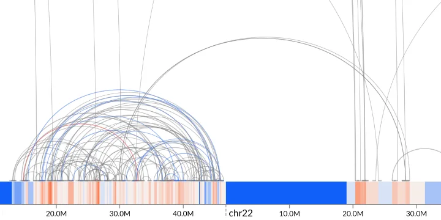
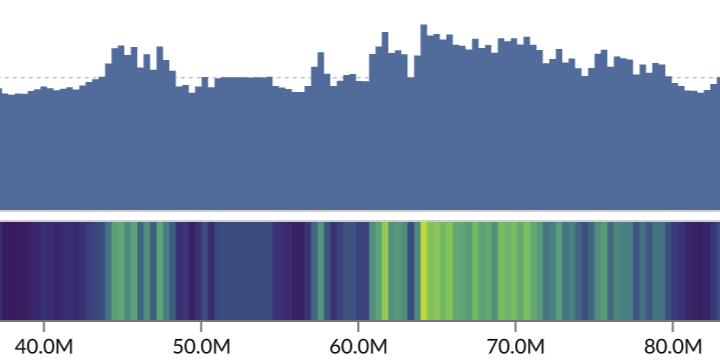
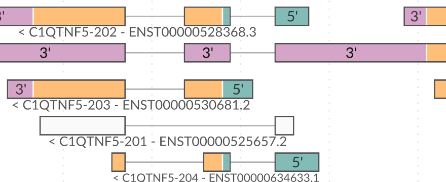
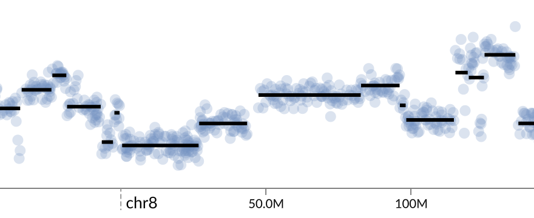
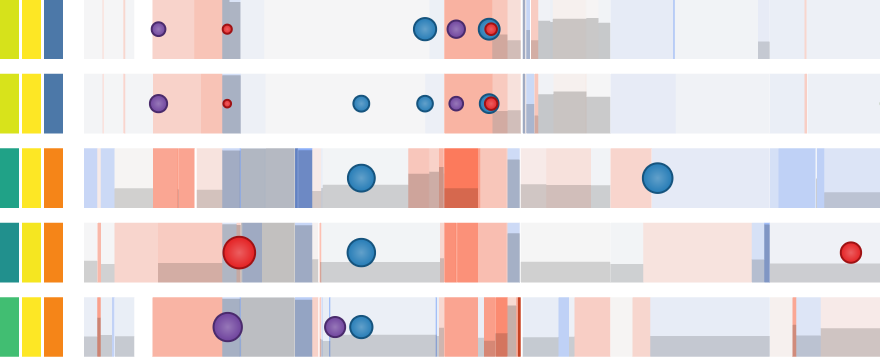
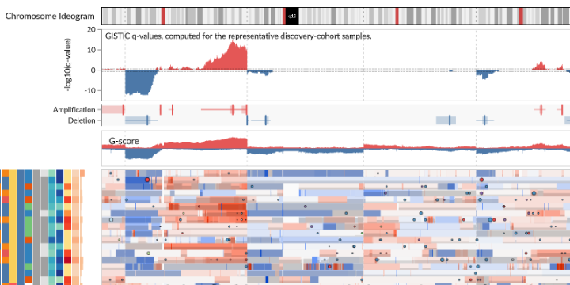
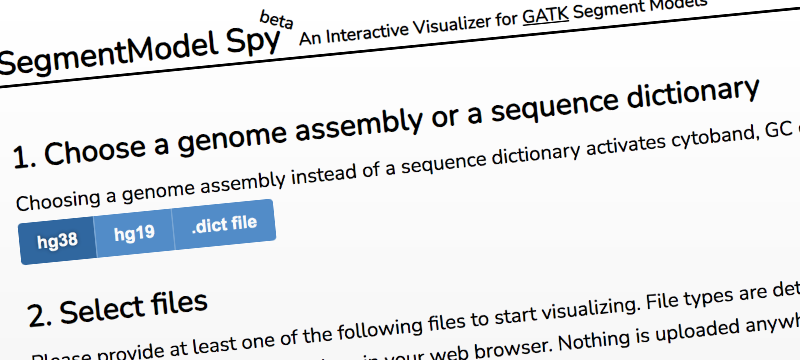
Copyright © 2018-2026 Kari Lavikka ( ) and contributors.
GenomeSpy was originally developed in The Systems Biology of Drug Resistance in Cancer group at the University of Helsinki.
This project has received funding from the European Union's Horizon 2020 Research and Innovation Programme under Grant agreement No. 965193 (DECIDER) and No. 847912 (RESCUER), the Sigrid Jusélius Foundation, the Cancer Foundation Finland, and Orion Research Foundation.